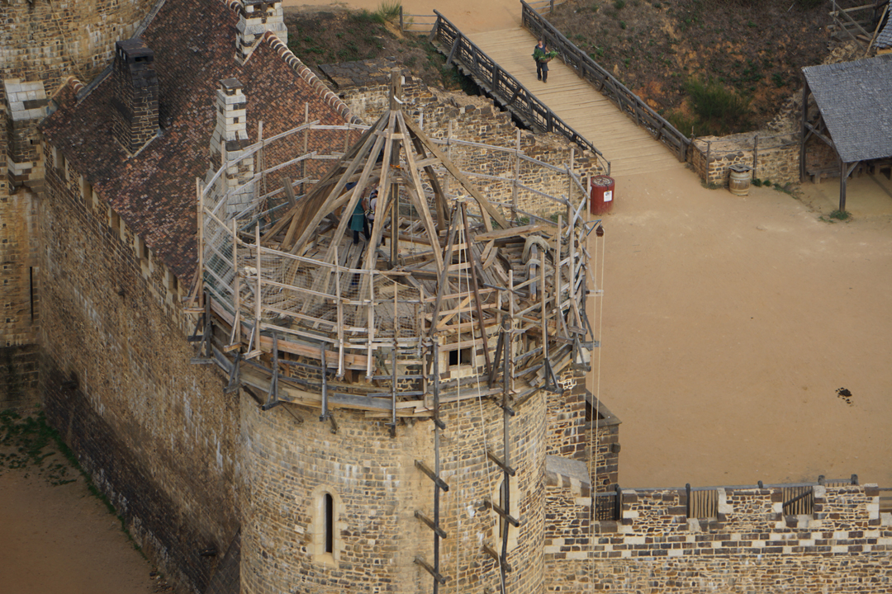
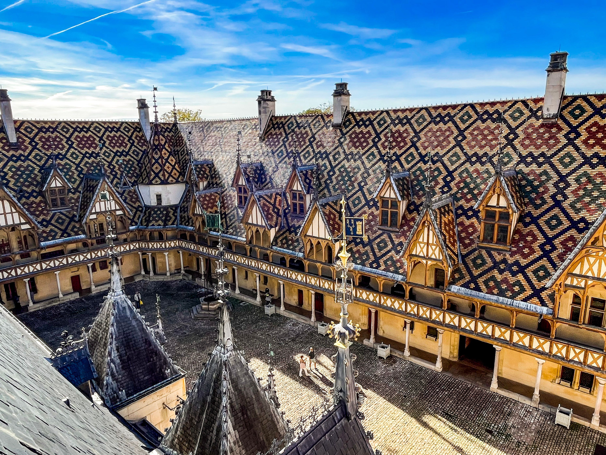
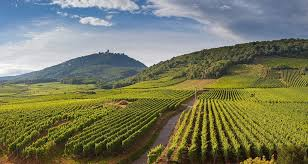

DU CHÂTEAU DE GUÉDELON À BEAUNE
Du samedi 10 au dimanche 11 mai 2014
| Durée | 2 jours |
|---|---|
| Prix | 209 € |
| Dates | Du samedi 10 au dimanche 11 mai 2014 |
| Région | Yonne & Côte-d’Or (Bourgogne-Franche-Comté, France) |
Samedi : Votre région → Château de Guédelon
Départ de votre région à bord de notre autocar grand tourisme en direction d’Auxerre. Déjeuner en cours de route. L’après-midi, rendez-vous avec votre guide au château de Guédelon pour la visite du chantier médiéval : une immersion totale dans le Moyen Âge à travers un incroyable défi. En fin de journée, installation à l’hôtel dans les environs, dîner et logement.
Dimanche : Beaune
Petit déjeuner à l’hôtel et départ pour Beaune. Vous serez accueilli aux célèbres Hospices de Beaune pour une visite guidée. Près de 400 000 visiteurs côtoient chaque année l’Hôtel-Dieu, qui couvre aujourd’hui une aire importante de la ville de Beaune avec son musée, ses trois cours, ses dépendances, son bastion et ses caves conservant notamment la réserve personnelle des Hospices. Déjeuner au restaurant, puis petit temps libre avant le retour direct vers votre localité. Arrivée prévue en fin de journée.
Nos prix comprennent :
- Le transport en autocar grand tourisme.
- L’hébergement en chambre double dans un hôtel 2 étoiles.
- Les repas : du déjeuner du jour 1 au déjeuner du jour 2.
- Les visites et excursions mentionnées au programme.
- L’assurance rapatriement.
Nos prix ne comprennent pas :
- Le supplément chambre individuelle : 30 €.
- Les boissons.
- L’assurance annulation : 10 €.
Formalité :
Carte d’identité en cours de validité.



Prix par personne, base chambre double.